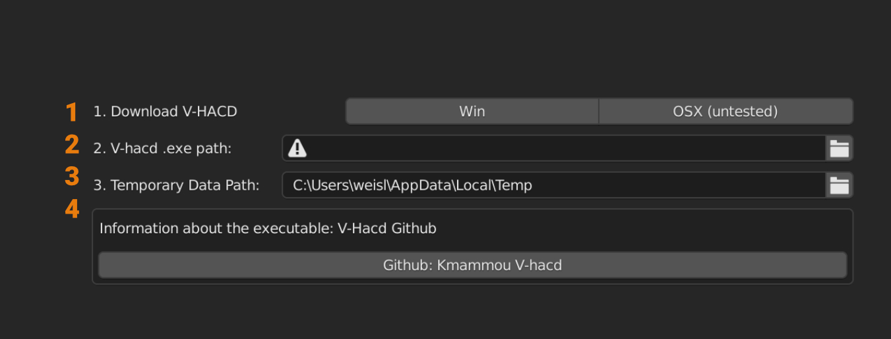

Auto Convex Shape
Auto Convex is a helpful tool for generating convex colliders of a complex mesh. It works well for complex, organic shapes, like rocks, statues, rubble and debris. It is not the magic one click solution for each asset!
Warning
Auto Convex required the V-HACD .exe to work. Follow the instructions below to activate it.

- Download the V-hacd executable from the link below (Download V-hacd). (optional) Copy the downloaded executable to another directory on your hard drive.
- Press the small folder icon of the 'V-hacd exe' input to open a file browser. Select the V-hacd.exe you have just downloaded before and confirm with 'Accept'.
- (optional) The auto convex collider requires temporary files to be stored on your pc to allow for the communication of Blender and the V-hacd executable. You can change the directory for storing the temporary data from here.
- (optional) See the Github page of the V-HACD for more information on the executable.
Basic Parameters
The amount convexßhulls and their complexity can mostly be controlled by 2 simple values. Those parameters are exposed to the Collider Tools panel.

| Parameter name | Description | Default value | Range |
|---|---|---|---|
| Depth | maximum number of clipping stages. During each split stage, all the model parts (with a concavity higher than the user-defined threshold) are clipped according to the "best" clipping plane | 3 | 1-32 |
| Verts per Piece | controls the maximum number of triangles per convex-hull | 16 | 4-1024 |
The parameter description is coming from the original library used: Github: V-hacd

Warning
Known Issue: Blender can sometimes crash when using Undo (CTRL + Z) during the auto convex collider generation.
Advanced Parameters
The advanced parameters can be found in the addon preferences in Auto Convex. The settings are only visible if the VHACD exe is installed.

Followind table contains more information on the individual parameters:
| Parameter name | Description | Default value | Range |
|---|---|---|---|
| resolution | maximum number of voxels generated during the voxelization stage | 100,000 | 10,000-64,000,000 |
| concavity | maximum concavity | 0.0025 | 0.0-1.0 |
| planeDownsampling | controls the granularity of the search for the "best" clipping plane | 4 | 1-16 |
| convexhullDownsampling | controls the precision of the convex-hull generation process during the clipping plane selection stage | 4 | 1-16 |
| alpha | controls the bias toward clipping along symmetry planes | 0.05 | 0.0-1.0 |
| beta | controls the bias toward clipping along revolution axes | 0.05 | 0.0-1.0 |
| gamma | maximum allowed concavity during the merge stage | 0.00125 | 0.0-1.0 |
| pca | enable/disable normalizing the mesh before applying the convex decomposition | 0 | 0-1 |
| mode | 0: voxel-based approximate convex decomposition, 1: tetrahedron-based approximate convex decomposition | 0 | 0-1 |
| maxNumVerticesPerCH | controls the maximum number of triangles per convex-hull | 64 | 4-1024 |
| minVolumePerCH | controls the adaptive sampling of the generated convex-hulls | 0.0001 | 0.0-0.01 |
The parameter description is coming from the original library used: Github: V-hacd